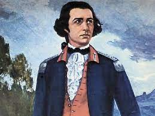
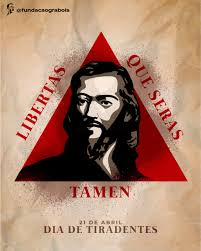
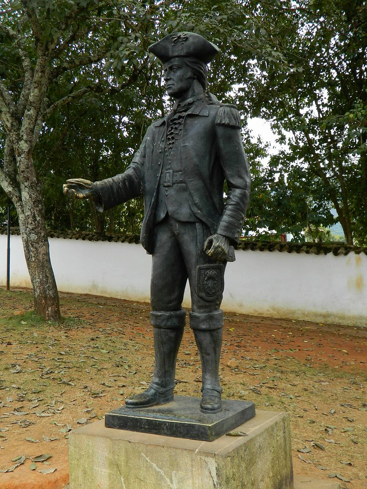
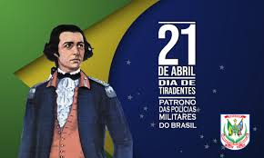

Tiradentes: O Herói da Inconfidência Mineira
Tiradentes, cujo nome verdadeiro era Joaquim José da Silva Xavier, foi uma figura central na história do Brasil colonial. Nascido em 1746, em Minas Gerais, ele se destacou como líder na luta pela independência do Brasil.
Sua atuação na Inconfidência Mineira, movimento que buscava libertar o Brasil do domínio português, o tornou um símbolo de resistência e luta pela liberdade. Em 1789, Tiradentes liderou uma revolta que tinha como objetivo proclamar a independência da região de Minas Gerais.
Após o fracasso da conspiração, Tiradentes foi capturado, julgado e condenado à morte. Sua execução, ocorrida em 21 de abril de 1792, teve um significado profundo para a história do Brasil, transformando-o em mártir da luta pela independência.

O legado de Tiradentes permanece vivo até os dias de hoje, sendo lembrado como um herói nacional e um símbolo de coragem e determinação. Sua imagem está presente em diversos monumentos, selos, moedas e notas do país.
Além de sua participação na Inconfidência Mineira, Tiradentes também se destacou como dentista, profissão que exercia antes de se envolver na luta pela independência. Sua habilidade como dentista lhe rendeu o apelido pelo qual é mais conhecido.
Apesar de ter sido executado, Tiradentes tornou-se uma figura emblemática na história brasileira, sendo reverenciado como um mártir da independência. Sua coragem e determinação inspiraram gerações de brasileiros a lutar por um país livre e justo.
O Dia de Tiradentes, comemorado em 21 de abril, é uma data nacional no Brasil e uma oportunidade para refletir sobre o significado da luta pela liberdade e a importância de figuras como Tiradentes na construção da identidade nacional.
A memória de Tiradentes é preservada em museus, monumentos e obras de arte em todo o Brasil, destacando sua importância histórica e seu papel na formação da nação brasileira.
Seu sacrifício e dedicação à causa da independência são lembrados e celebrados por todos os brasileiros que reconhecem sua contribuição para a construção de um país livre e soberano.
Assim, Tiradentes continua sendo uma figura inspiradora, cujo exemplo de coragem e comprometimento permanece vivo na memória coletiva do povo brasileiro.